CS 463G & CS 663
(Intro to) AI
Lecture 14: CSP Consistency
Fall 2026
In a constraint satisfaction problem (CSP), propagation removes domain values that cannot belong to a solution.
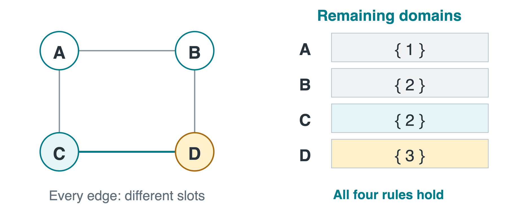
A unary constraint restricts one variable. Node consistency means every remaining value satisfies all its unary constraints.
Let D_X denote the domain of age X, with the rule X\ge18.
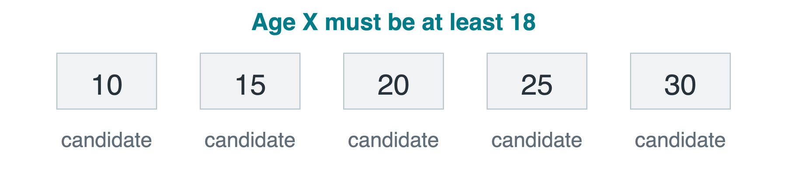
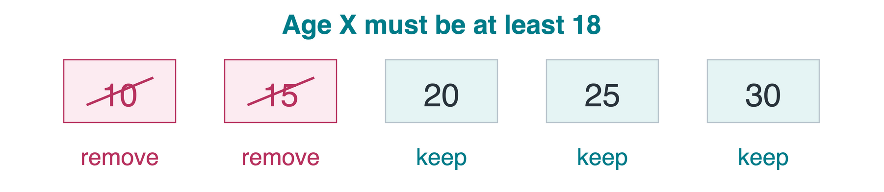
Keep D_X=\{20,25,30\}. Having just one valid value is not enough if invalid values remain.
If filtering empties a domain, the current problem or search branch has no solution.
For X<Y, a support for x\in D_X is a value y\in D_Y that makes the constraint true. Lines below join allowed pairs.
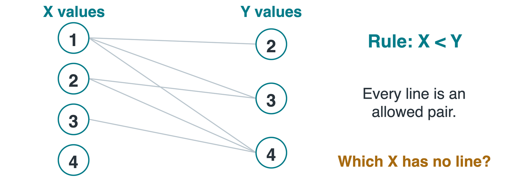
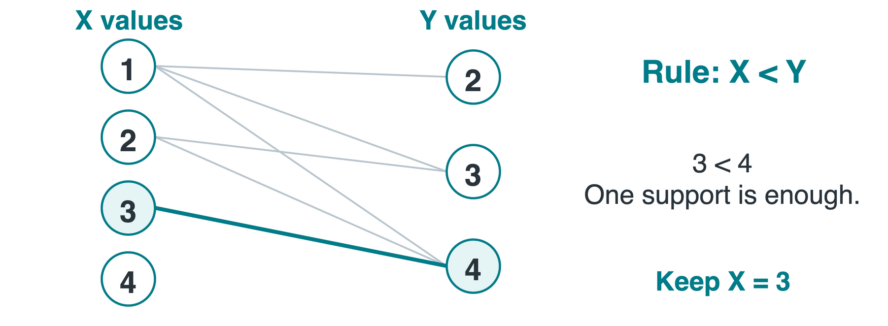
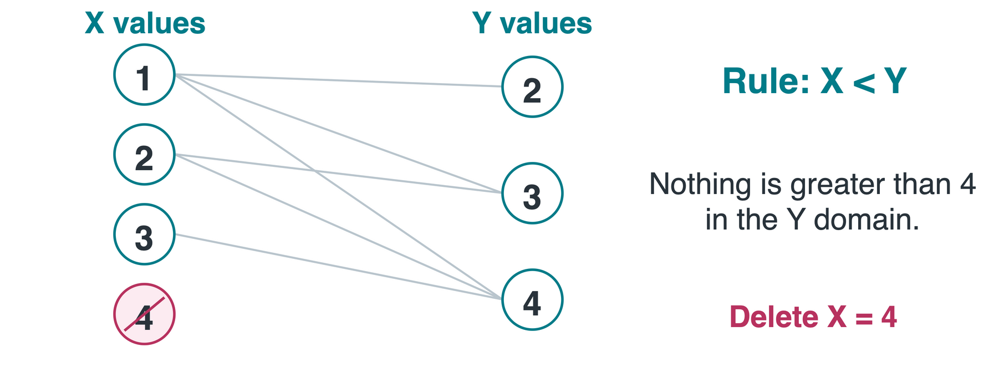
X=3 stays: Y=4 is a support because 3<4.
X=4 goes: no value in D_Y is greater than 4.
An arc (X,Y) asks whether each value of X has support in Y. Revising it can shrink X’s domain only.
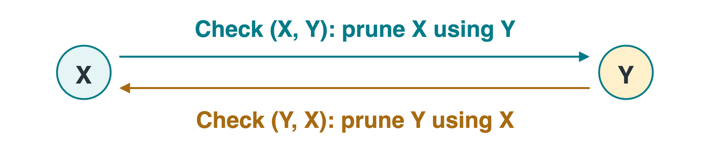
| Directed check | After removing 4 from D_X |
|---|---|
| (X,Y) | Each x\in\{1,2,3\} has a larger y |
| (Y,X) | Each y\in\{2,3,4\} has a smaller x |
A binary CSP is arc-consistent when every directed arc passes. Reverse the check, not the rule: it is still X<Y.
D[i] is the current domain of X_i; C_{ij}(x,y) is true exactly when the pair is allowed.
Q stores directed arcs awaiting revision. NEIGHBORS(i) lists variables constrained with X_i.
A deletion may invalidate neighbors’ supports. true means no empty domain was found, not that a solution was found.
Rules: A<B and B<C. The queue front is on the left; add an arc only if it is not already pending.
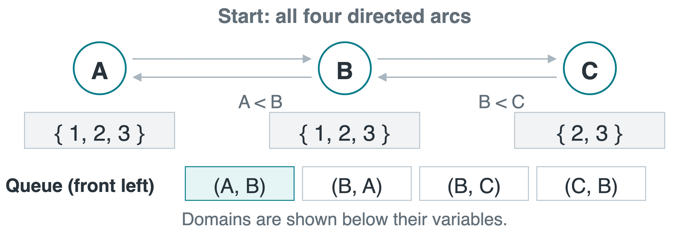
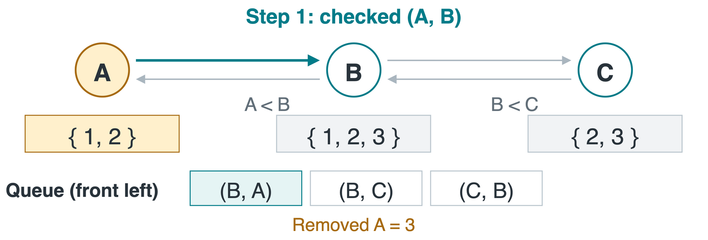
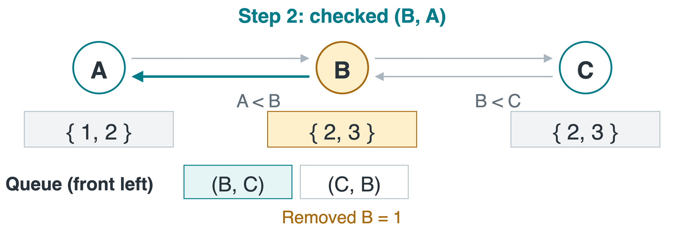
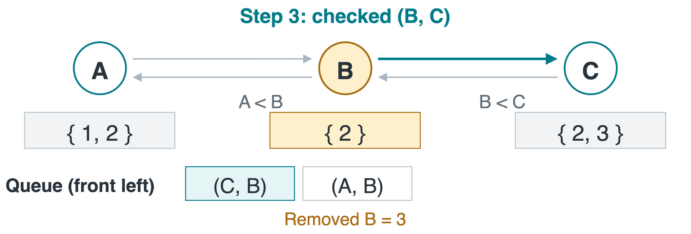
1. (A,B) deletes 3 from D_A: no larger B.
2. (B,A) deletes 1 from D_B: no smaller A.
3. (B,C) deletes 3 from D_B; put (A,B) back.
Continue the same problem and queue. A previously consistent arc may need checking again when its supporting domain shrinks.
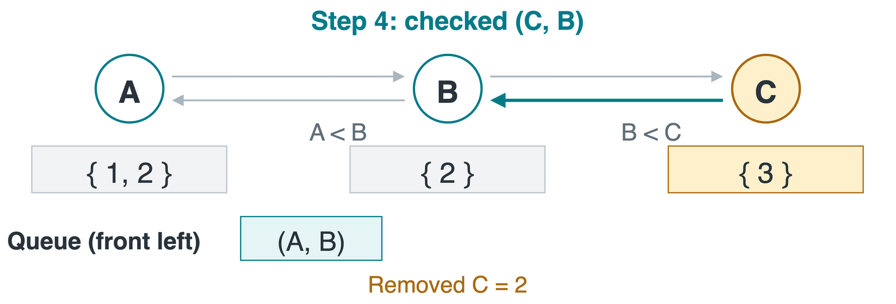
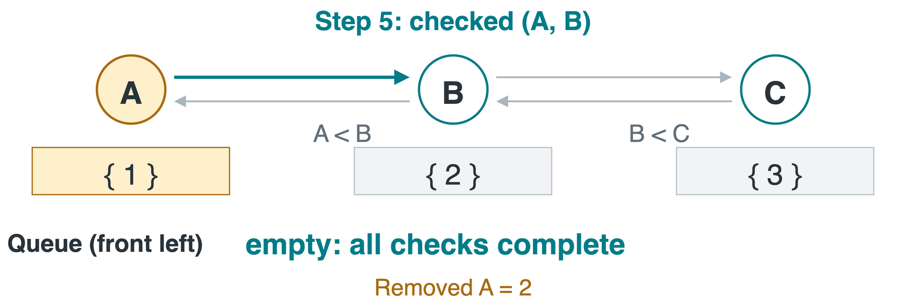
4. (C,B) deletes 2 from D_C: B=2 requires C>2.
5. (A,B) deletes 2 from D_A: its old support B=3 is gone.
The queue is empty. Here we obtain a solution: A=1,\ B=2,\ C=3, and both inequalities hold.
When checking (B,C) removes 3 from D_B, A may lose a support.
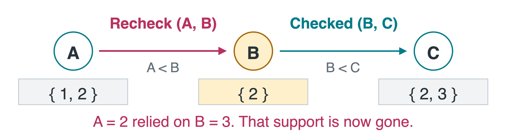
When D_i shrinks, reconsider arcs into X_i: neighbors were relying on its old values.
Three variables have domains \{1,2\}. Every pair must differ: A\ne B, A\ne C, and B\ne C.
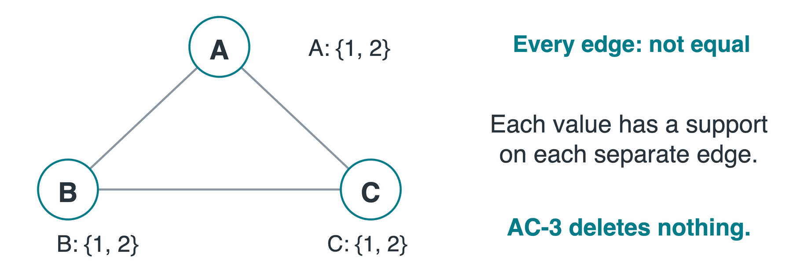
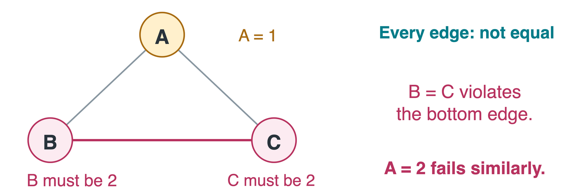
Before any choice, every arc is consistent: 1 has support 2, and 2 has support 1.
Yet there is no solution. Choosing A=1 forces B=C=2; choosing A=2 fails symmetrically.
Path consistency (3-consistency): every consistent assignment to two variables can be extended to any third variable.
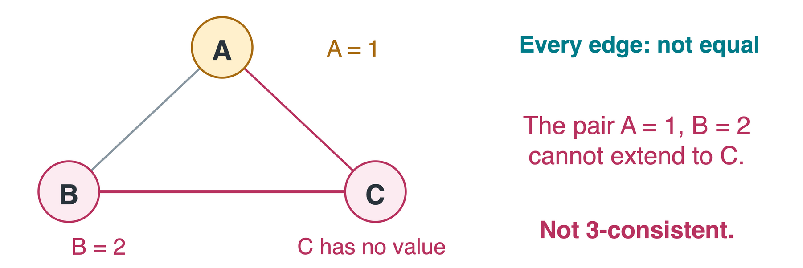
Stronger checks detect more contradictions, but cost more.
Domains are finite and only shrink. New queue entries are added only after a deletion, so the process eventually stops.
Let e be the number of directed arcs, and d the largest initial domain size.
| Work | Basic AC-3 bound |
|---|---|
| One REVISE: try up to d supports for each of d values | O(d^2) |
| Rechecks of one arc as its supporting domain shrinks | O(d) |
| All directed arcs, with duplicate pending entries avoided | O(ed^3) |
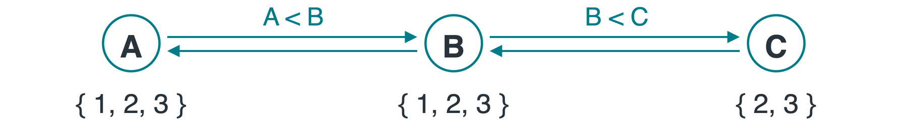
For this chain, what are e and d? e=4, d=3.
All four variables initially allow digits \{0,1,\ldots,9\}. Each edge requires the indicated sum.
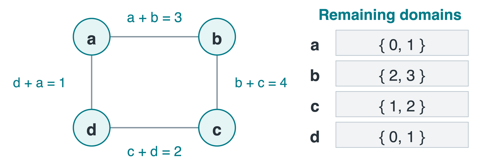
Can we freely combine values? No: a=0, b=2 violates a+b=3.
The notebook starts with 4 directed checks. Full AC-3 uses 8, including each reverse check. Both give these domains for this example.
Propagation removes impossible candidates. Search may still be needed to choose values that work together.